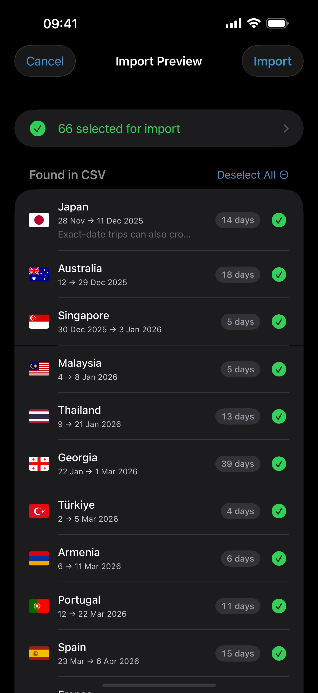

CSV Import
Import a backlog of travel history, understand why rows fail or get skipped, and decide when the imported record is safe enough to use.
What This Page Helps You Do
Use this page when your trip history already exists in a spreadsheet, notes export, or rough source material and manual entry would be too slow.
By the end of this page, you should know:
- when CSV import is the right tool and when manual entry is still better
- what file shape AtlasDays accepts
- why a row can fail, be skipped as a duplicate, or trigger an overlap warning
- what the preview checks before anything is saved, and what it does not prove
Decide the trip precision before you import. The importer can validate the file shape, but it cannot decide for you whether a trip should be Exact Dates, Year, or Unknown. Use Trip Modes and Record Quality for that part.
When CSV Import Does Not Behave as Expected
Most CSV import problems come from a small number of causes. Check these first:
- Invalid row shape: a row still needs the expected columns, even if some date fields are empty. AtlasDays expects at least Country, Start Date, and End Date positions.
- Unsupported date shape: dates must be either Exact Dates in
yyyy-mm-dd, a bare 4-digit Year, or fully empty for Unknown. - Mixed date models in one row: a row like
2024-06-15for Start Date and2024for End Date is invalid. Use one model per row. - Invalid country or Transit value: the country must resolve to an app-supported place, and Transit must be a value like
Yes,No,True,False,1, or0. - Duplicate rows are skipped automatically: AtlasDays skips trips that already exist in your record, and it also skips later duplicates inside the same import file.
- Overlap warnings are warnings, not an automatic block: AtlasDays can still import a non-duplicate row that overlaps with existing Exact Dates trips, but you should review that conflict before trusting totals.
- Import Preview is a review step, not proof: parsing successfully means the row shape is accepted. It does not prove the dates, precision, or source material are already trustworthy enough for live counting.
- Bad source material should usually be fixed before import: if many rows share the same problem, repair the source CSV first instead of pushing a messy batch through and cleaning it trip by trip later.
When to Use CSV Import
CSV import is best when you already have a spreadsheet, a large backlog of trips, or rough source material you want to convert into a structured file. For a few recent trips, manual entry is usually faster and safer.
Manual entry is also better when the trip matters for live counting right away, when you need to resolve same-day crossings carefully, or when the source is too ambiguous to batch-format confidently.
The main in-app path is Settings > Import CSV. If your timeline is still empty, AtlasDays also shows an Import from CSV shortcut there.
Start with the App Template
On the import screen, use Download Example CSV. That gives you the exact header AtlasDays expects:
Country,Start Date,End Date,Transit,Notes (optional)
AtlasDays can also import its own CSV export format that includes a Days column, and it still accepts the older 9-column legacy format. If you are building a new file from scratch, use the current 5-column template.
Choose the Right Date Model for Each Row
Pick the most defensible precision for each trip before you import it:
- Exact Dates: use
yyyy-mm-ddin Start Date and End Date when the stay matters for counting and you can defend the exact calendar dates. - ongoing: use
yyyy-mm-ddin Start Date and leave End Date empty only when the stay is still open now. - Year: put a 4-digit year in Start Date when you know the year but not the exact dates. Use another year in End Date only if the Year trip spans multiple years.
- Unknown: leave both Start Date and End Date empty only when you truly cannot place the trip in time at all yet.
- Transit: mark Transit only when you did not enter the country, such as an airside layover. Do not use it for a short entered-country stay.
- Same-day trip: use the same calendar date in both fields for a one-day visit.
Do not mix Exact Dates and Year values in the same row. If you visited the same country twice, crossed a border and came back later, or need to represent separate stays, split that into multiple rows.
What AtlasDays Accepts
- Country can be a supported full place name or a 2-letter code. Some common aliases resolve too, but the app template is the safest source of names.
- Transit should be
Yes,Y,True, or1if you did not enter the country. Leave it empty otherwise. - Notes are optional. If a note contains commas, wrap it in double quotes.
- The importer detects comma, semicolon, and tab delimiters from the header row.
What Import Preview Actually Tells You
After you choose a file, AtlasDays parses it and opens Import Preview. Nothing is written to your trip history until you confirm the import from that preview screen.
- Valid rows appear under Trips to Import. That means AtlasDays accepted the row shape and can turn it into a trip.
- Rows with errors appear under Errors and are not imported. Typical reasons include invalid country names, invalid date text, an end date without a start date, or mixing Exact Dates with Year in one row.
- Duplicate rows are labeled and skipped automatically. A duplicate means the same meaningful trip fields already exist in AtlasDays, or already appeared earlier in the same file.
- Overlap warnings highlight non-duplicate Exact Dates trips that would overlap with existing or other imported trips. They are warnings, not an automatic block.
If the file has both good and bad rows, AtlasDays still lets you import the valid, non-duplicate rows. That is useful for progress, but it does not mean the final record is already clean enough to trust without review.

Using Imperfect Source Material
If your source data is messy, clean the precision first rather than forcing everything into Exact Dates. Import trips with defensible calendar dates as Exact Dates, vague past visits as Year, and only use Unknown rows when you truly cannot place the trip in time yet.
Good source material includes passport stamps, booking emails, calendar history, old notes, and previous spreadsheets. If the source is contradictory, fix that before you rely on tracker results.
What the AI Helper Does and Does Not Do
The import screen includes a built-in prompt you can copy into ChatGPT, Claude, or another assistant. Its job is to turn rough source material into AtlasDays CSV faster.
- It does help convert rough notes into the right column structure faster.
- It does not import anything into AtlasDays by itself.
- It does not know whether an ambiguous date should be Exact Dates, Year, or Unknown unless you tell it clearly.
- It does not replace the in-app preview.
- It does not replace your own source verification.
Use the helper as a drafting tool. It is useful for structure, not authoritative on ambiguous dates, overlaps, or whether the imported record is already trustworthy enough for totals.
Avoid Garbage Imports
- Do not batch-import until you know which rows should be Exact Dates and which should stay Year or Unknown.
- Do not compress multiple visits to the same country into one row unless it was actually one continuous stay.
- Do not force Exact Dates when you only know the year.
- Do not use Transit for trips that should count toward time spent in the country.
- Fix large clusters of source errors and re-import instead of trying to work around them row by row.
- Do not assume AI-generated CSV is correct just because it parses.
When Imported Data Is Trustworthy Enough
CSV import can save a lot of time, but it does not resolve ambiguity for you. Treat the imported record as trustworthy enough only when the important trips behind your question have been reviewed.
- Use Exact Dates for trips that matter to live dashboard totals, trackers, and export math when you can defend those dates.
- Review duplicate skips so you know AtlasDays ignored the rows you expected it to ignore.
- Review every overlap warning before trusting the record downstream.
- Check that Transit is used only for non-entry travel.
- Check that any ongoing imported trip is intentionally still open.
- Treat Year and Unknown as preserved history, not as proof of precise counted days.
If the imported record still has unresolved duplicates, overlaps, or vague dates, the same uncertainty will flow into Dashboard and Map, Trackers and Limits, and Export and Reports.
Where to go next
Trip Modes and Record Quality is the next page if the real problem is row precision, duplicate cleanup, overlap review, or deciding between Exact Dates, Year, Unknown, and Transit.
Dashboard and Map helps you verify whether the imported record now produces the totals, map output, and period summaries you expected.
Trackers and Limits explains why imported trips can still produce unexpected tracker results if the underlying record or precision is off.
Export and Reports is useful when you want to inspect the imported record as a file after review. CSV export and PDF export currently require AtlasDays Pro.
Getting Started is better if your backlog is still small and manual entry is likely the cleaner path.